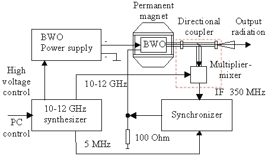

Instruments 35-400 GHz range 35-400 GHz range
The device is designed by analogy with, and as a continuation of the series of "Kvarz" synthesizers
[Ref. 12 (1994)] (Device 005).

Block-diagram of 35-400 GHz frequency synthesizer
Conventional BWO tubes from "Istok" (Fryazino, Moscow
region) are used. For non-packetized tubes of the type OB-24 or OB-30 we
developed a compact permanent magnet system (Device
003).
The output radiation of the tube is stabilized by a phase locked loop (PLL) system
against harmonic of 10-12 GHz signal. This signal is generated either by commercial
or
home-made
synthesizer.
The base block of "Kvarz" synthesizer may be used.
The base block produces also a signal for the BWO power supply to direct the radiation of the
tube to required frequency range where it will be automatically entapped and locked by the PLL system.
Further precise control of the tube output radiation is performed by controlling the 10-12 GHz
signal of the base block by PC through GPIB interface.
Fast digital frequency sweeping of output radiation within 200 MHz range is
possible using a radio frequency (20-50 MHz) fast direct digital synthesizer
as a reference signal source for the synchronizer
(Device 012). The multiplier-mixer
is of balance type based on a couple of planar Schottky diodes glued
on a strip-line inside a wave-guide. Transmission-type mixers are used for
35-178 GHz range sources (Device 017).
Quasioptical waveguides are used in a higher frequency rage (Device
013). Workability of
the synthesizer
in such configuration was demonstrated up to 500 GHz. Main parameters of the
synthesizer output radiation are the the following: relative frequency stability -
10 ppb with inner reference
quartz oscillator or higher with the use of external 5 MHz signal from rubidium
or hydrogen standard; radiation bandwidth - 1 kHz; minimal frequency step 100
Hz; output power 5-50
mW (depending on BWO output).
The synthesizer allows either amplitude or frequency modulation of output
radiation. Fast
digital frequency scanning with continuous phase (see
block-diagram here) is possible as an option.
BWO radiation spectral characteristics
|